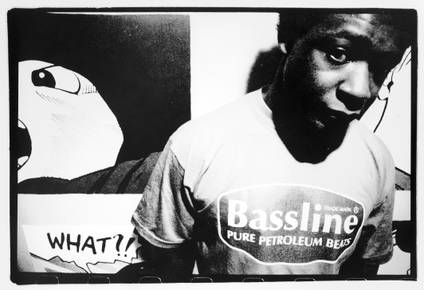

The Future Sound of Techno, 1999–?
WHAT BECOMES PAINFULLY OBVIOUS IS THE NARROW PERCEPTION OF THOSE IN POWER TO SEE THAT CHANGE IS A GOOD THING. IF ANYTHING, WHAT THIS MUSIC REPRESENTS IS A CHANGE, A RAPID DEVELOPMENT TOWARDS SOMETHING ELSE. ADMITTEDLY MORE ALIEN, MORE FACELESS, ELECTRONIC MUSIC REPRESENTS THE EVOLUTION OF MUSIC. THIS IS PERHAPS NOT THE DEATH OF ROCK ’N’ ROLL BUT ITS RECONSTRUCTION.
TODD ROBERTS AND TAMARA PALMER, “THE NEXT BIG THING,” URB, NO. 53, P. 67
So what now? Techno has made the journey from Detroit neighborhoods to all seven continents, from the underground to the mainstream, and from high school party politics to the “peace, love, unity, respect” mottoes of rave culture. Will it continue fighting its way through the mass media and the lowest common denominator? And how does techno measure its progress in the twenty-first century, now that it has saturated nearly every corner of the globe?
Even as 1997’s electronica craze fades into history, it’s clear that the United States is still techno’s toughest, harshest obstacle. In attempting to reach wider audiences here, the music has lost too much through too many compromises. And after several attempts to include techno in its plans, the U.S. music industry hasn’t really conceded much in the process. In other words, techno has to face the reality that in the United States, it’s not destined to run in the same circles as “rock” or “jazz.”
Techno represents a radical departure from traditional marketing techniques and the promotion of personalities—one that may or may not add to the total experience. The only way techno can work with or inside larger entities is if it is allowed room to grow and if there is a concerted effort to educate audiences and industry alike. Giving techno the autonomy it already takes for granted is a strange proposition, but sooner or later some label will figure out a way to make it work. One short-lived example came from a seemingly unlikely source: the Sony Corporation. Sony has a wide and worldly view and, at least in Japan, it recognized techno as a powerful movement with an agenda and impetus all its own.
In January 1994, a small part of the foreign music department at Sony Entertainment Japan (where big names like Mariah Carey are handled) began releasing catalog material from R&S, Warp, and Rising High. This led to the establishment of Sony Techno later that year, a department that today licenses material from Transmat, Warp, and Rephlex, as well as Japanese labels like Denku and newer Japanese artists. According to Sony A&R man Masakazu Hiroishi, it wasn’t an easy five years.
At the beginning, the [Japanese] market for techno was still very immature and small. It was like trying to make a road in a jungle. It was more about educating the whole music industry of this new genre before we could even start promoting individual artists. It was essential to work closely with press, promoters, and retail to plan detailed articles on techno, organizing parties at clubs and arranging retail campaigns to create the basis for this music genre.
It is debatable whether this type of major label techno department is a realistic possibility in the United States, even with Americans slowly inching toward acceptance of the genre. As Hiroishi explained:
Personally, I would very much like to see such an entity happen in Sony USA or in any of the major U.S. record companies, but I am not very optimistic about it. The techno acts who are successful in the United States now are not pure techno but are more of crossovers between rock or hip-hop. It would be possible for an indie label to team up with a major record company to enforce the distributions, as it is often seen in the hip-hop industry. However, techno requires special care and handling. Some of the attractions of this music can be weakened along the way when it is handled by too many people.
Since major labels never fully stepped up with practical approaches, the responsibility for techno’s future success shifted back to the underground and smaller labels. As shown by entities like Submerge, the underground has come to understand its business and niche market existence. But even with digital tools available to speed up and narrow the focus of distribution, the only mechanism small labels have for cultivating a techno audience is word of mouth. Even in the era of large-scale social networks such as Facebook and a plethora of digital record stores, there’s nothing that can replace the major label marketing push of old. Ironically, this may be just fine with techno’s producers, many of whom aren’t expecting their records to have an impact in every country—especially the United States. One such artist is Alan Oldham, who shut down his first globally oriented label, Generator, in 1996. For his newer Pure Sonik label, Oldham opted for a more practical approach.
I don’t care if America’s not into my music, because America wasn’t into Trane [John Coltrane] or Miles [Miles Davis] either. I think [it will have] a subtle growth—it’s going to be one of those things where you wake up one day and you’re going to find it will have cracked in some way. I’m not going to sell 500,000 units any time soon, I can tell you that. [But] if I can get a solid 5,000 people to buy my record, I’ll be all right forever. Remember, [it was] back around 1988 that [the] Windham Hill shit and the whole New Age movement was at the apex of its popularity, and now it’s kind of settled into the people who like it. [Artists like] John Tesh, Mark Isham, [and] Tuck and Patti live off that cult, and that’s where you want to be. To me, techno is only going to be that big.
There’s no complete explanation for the stacked decks and uphill battles techno artists have faced in the United States. But there is one way to look at how the United States became “Island America,” or how we can often be reluctant or downright loath to accept foreign ideas or attitudes—a comparison with soccer interest from the 1970s on. There’s a parallel to the acceptance of techno at every step: disco fever coinciding with the heyday of the National American Soccer League and Brazilian soccer star Pelé in the 1970s, burgeoning professional soccer leagues and young techno scenes everywhere except the United States in the 1980s and 1990s—all the way up to Americans’ newfound interest in “electronica” and Major League Soccer in the late 1990s. It’s as if the ball has finally been passed back stateside, and we’re still fighting the temptation to use our hands.
It takes great patience to understand the fragmented landscape of today’s electronic music—especially if one plans to purchase music products, rather than experience it in the context of a club or party. As much as techno is a sum of musical influences, it has also divided into an infinite number of substrata, which are nearly impossible to trace. The easiest way to start is by looking at the “stronger” genres that have emerged—those that have developed into full-fledged musical movements of their own and are not only distinct but have proven out over time.
One of the most futuristic-sounding styles is that of “drum & bass.”1 One explanation of drum & bass is that it is an accelerated evolution of hip-hop, brought on by the advancements and prevalence of digital sampling technology. But this description obscures a complicated evolution similar to that of techno. Part Jamaican “dub,” part hip-hop, part techno, and all British, drum & bass reflects both the cumulative history of electronic dance music and its unexplored possibilities.
It’s no accident that drum & bass has captured so much attention and analysis. Its absorption of and residual effects on any form of music it touches is a fascinating process. With a signature sound resonating just inside our comprehension, drum & bass is centered on disjointed, fibrillating drum patterns and subsonic, rumbling basslines. This “basic” rhythmic framework has given an array of other genres and artists a new context in which to be heard. Drum & bass has worked its way into Soul Coughing’s brutal beat poetry, the R&B productions of Timbaland and Missy Elliot, and even the melodies of Brazilian composer Antonio Carlos Jobim. In recent years, it has also become a preset, generic “music bed” for sports highlight reels and television commercials. Like the Detroit techno scene in the mid-1990s, it also went back underground.
Drum & bass has also attracted attention with its surreal division and coexistence of different tempos: basslines generally clock in at half the beats-per-minute ratio of the reconstituted breakbeats (80 to 160 bpm, for example). “You had hard-core/breakbeat circa 1991,” says Dego McFarlane of 4Hero and London’s Reinforced Records. “Prodigy [along with N-joi and Altern 8, among the more visible] was a part of the scene, though back then it was around 125–130 bpm—now it’s at 160 and up.”

FROM THE UNDERGROUND TO THE POP CHARTS, THROUGH ACID HOUSE, TECHNO AND DRUM AND BASS, GERALD SIMPSON HAS MAINTAINED BOTH HIS CREATIVITY AND HIS INTEGRITY. (Eddie Otchere)
There are almost as many drum & bass subcategories as there are drum & bass records, as even the slightest new musical direction seems to generate a new, artificially created subgenre, raising ire among many of its original producers. A superfluous lexicon nearly choked the life out of Britain’s most interesting musical export. As McFarlane exclaims, “As far as terms go, I couldn’t give a toss about any of them. [Proceeds to ramble off a dozen or so combinations, including jungle, hard core, step, breakbeat, ambient, and dark. . . . They’re all a load of crap.”
McFarlane’s viewpoint comes from having witnessed the rapid evolution of dance music and from helping several of today’s drum & bass artists start their careers. Many innovators have passed through Reinforced Records, including Ray Keith & Doc Scott, Younghead, L Double, DJ Peshay, Nookie, and Leon Mar (aka Arcon 2). The label’s best-known drum & bass progeny is Goldie, a former graffiti artist and break-dancer from Walsall, England. Born in 1966 to a Scottish mother and Jamaican father, Goldie was put up for adoption and has never revealed his true identity to the press. By 1991, he had migrated from the hip-hop culture of his youth to that of the emerging breakbeat scene. His debut singles on Reinforced—“Killa Muffin” and “Darkrider”—came in 1992, under the “Rufige Kru” pseudonym. Eventually, Goldie’s own imprint, Metalheadz, began occupying more and more of his time, though he still managed to collaborate on several Reinforced projects simultaneously, including a 1995 collaboration with A Guy Called Gerald titled “The Two G’s.” Metalheadz eventually became a launching pad for yet another wave of drum & bass artists, including Source Direct, Optical, Peshay, and Photek.
Working with producers McFarlane, Rob Playford, Dillinja, and Mark Mac, Goldie’s recordings (such as 1995’s “Timeless”) were elevated into the U.K. spotlight. The combination of these choice musical associations and his persona as a “21st Century B-Boy” made a major label deal inevitable.2 In 1995, Goldie signed a contract with London Records and an album soon followed. Timeless was drum & bass’s watershed moment, galvanizing interest in its underground movement and exposing the mainstream to the possibilities of pop-music crossovers. Carved out of the twenty-one-minute title song “Timeless,”3 the single “Inner City Life” featured vocals by Diane Charlemagne and led the way for dozens of drum & bass/vocalist experiments. It was the cornerstone of the alt-pop group Everything But the Girl’s evolution on their album Walking Wounded and lives on today in tracks like those from the collaborations of Nu:Tone and Natalie Williams on Hospital Records.
Like techno, drum & bass carries with it a long history at this point. It also follows suit in that a lot of original producers are still actively producing music, if not just on the DJ circuit. This can tend to mask the contributions of new artists on the scene. “[In] dubplate culture (where the freshness of your selection is critical), it’s inevitable that those with the highest profiles and longest histories are going to be top of the game,” says Nu:Tone’s Dan Gresham. “It’s spectacularly hard for people to reach a similar level of notoriety.”
Drum & bass also seems to have reached the same level of maturity and resilience to conquer the plagues of assigning genres to its every move. There is something more satisfying about music when it does not have a name, or knowing that a specific designation has stood the test of time. Ghostly’s Sam Valenti had his specter (no pun intended) in avoiding the dead end of trip-hop. Dance music defined by its ever-increasing speed inevitably runs out of gas or hits the wall. There is a lesson for listeners and club-goers in leaving the dividing of records to the DJs who have to lug them around. Gresham:
D&B [drum & bass] has gone through a few periods where it’s looked like it will truly fragment (à la House), but each time it’s pulled itself back together again. One of the great strengths of the scene is its ability to incorporate so many different styles and flavors under the same umbrella. The pigeon-holing obsession primarily comes from journalists and forum-heroes, and generally only serves a negative purpose (“I can’t stand neuro-liquid—I’m only into darkside-wobble”).
While techno, house, and drum & bass were often in danger of becoming a federation of balkanized genres, artists and DJs also took a turn to the basics, mining classic disco and other inspirations. The same crowd ready with a new genre name for each successive move are the same critics, fans, and promoters that would label such a move “retro.” Consider the persistent electro movement or even the turntablists breaking off from “mainstream” hip-hop. Time is no more useful in defining these concepts than the genre names themselves. Consider author Jon Savage’s assessment of the styles that were literally stitched together to form the fabric of punk: “As these styles began to unravel within popular culture, pop’s linear time was shattered forever: there would be no more unified ‘movements,’ but tribes, as pop time became forever multiple. Postmodern.”4
One of the more poorly named genres is yet another outlet for the evolution of techno. Post-rock, as self-described, is an extension of and departure from traditional rock structures—usually with the same outward veneer of a band. Strangely (or perhaps fittingly), one of the hubs of post-rock activity is Michigan, home of bands such as Livonia’s His Name Is Alive (signed to the legendary English indie label 4AD) and Windy & Carl. Unfortunately, aside from a handful of remixes, post-rock has not yet connected with any of Detroit’s techno producers.
Post-rock seems to be in a unique position, poised at a nexus of creative possibilities and an understanding of the industry’s ups and downs. Many post-rock bands are more like collectives of adventurous musicians who settle into a groove after a bedouin-like existence of moving from one group to the next. Making the most of this position is Chicago’s Tortoise, formed in 1990 by members of Eleventh Dream Day, Chicago Underground Orchestra, the Poster Children, Bastro, the Tar Babies, and about a dozen others. John McEntire, who seems to anchor the group, also serves as its main drummer/percussionist, though being a “band” is about the last thing on Tortoise’s agenda. “It was just this collection of people,” he told The Wire in 1996. “Along with that, the instruments that most of us were proficient with didn’t necessarily include playing the guitar or singing. So we decided: why bother with that?”5
As in techno, musical gear plays a central role in Tortoise’s post-rock: the group’s live shows look more like reconstructions of studio sessions, with every last nook and cranny occupied by a different unconventional instrument (it’s not uncommon for two members to be playing vibraphone simultaneously). Steel guitars and marimbas share space with synths and drum machines, and are used to create a mixture of unwound dance music, dub, and film scores.6 At best, Tortoise is a snapshot of a moving target. The group’s side projects, almost as numerous as its former bands, coexist peacefully and even progressively; individual compositions migrate from one group to the next, picking up and discarding components along the way. Tortoise’s 1998 single “Jetty,” for example, is essentially a reworked narrative from Isotope 217’s “La Jetee.”
In almost every aspect, the bands like Tortoise deconstructed rock and made electronic music acceptable, if not integral, to their sound. The independent (“indie”) rock community seems to have noticed in the years since “post-rock” and has embraced electronics more readily and completely. In some ways it’s the fusion of the independent streaks in both rock and techno. The evolved approaches of artists such as Postal Service, Four Tet, Caribou, and Broadcast defy genre definitions with a new rigor.
An evolution in the structure of classic techno itself has been spearheaded by jazz fusions and infusions, by groups with their roots in electro (the Black Dog, Plaid, and 808 State), and by younger American artists weaned on the complexities of Atkins, May, and Craig. Artists such as Dan Curtin, Morgan Geist, and Titonton Duvante read into the complicated patterns and feelings of Detroit’s music and matched them with changes in tempo, instrumentation, and texture. In doing so, they found ways to be funky, forceful, and quirky (almost to a fault), and yet still make their records workable for DJs—at least those talented enough to work with smaller sections of grooves rather than the typical extended mixes of dance music.
Efforts to expand the structure of techno are also producing myriad combinations with jazz music. Jazz is one music genre from which techno seems to take all kinds of cues,7 and in fact the cultural parallels between techno and bebop in particular are striking: both originated with African American artists, both faced early resistance from U.S. audiences and traveled to Europe for greater acceptance, and both became popularized (some might say watered down) by white artists.
Given the improvisational character of jazz, combinations with techno seem nearly impossible. But through the work of various producers, ranging from powerhouses like Underground Resistance to more obscure acts like Gregory Watts’s GFQ, a lot of progress has been made in finding common elements between the two. Musicians like Carl Craig and Kirk DeGiorgio have even taken a literal approach, incorporating session players into their recordings and live performances. Craig, for example, enlisted jazz bassist Rodney Whitaker and percussionist Francisco Mora for his groundbreaking Inner-zone Orchestra.
While all of these jazz-related projects are ambitious, the most impressive still seem to be coming from studio-born projects, such as David Moufang’s loose collaboration Conjoint, all of Jonah Sharp’s work with Spacetime Continuum, and experiments with 3/4 time signatures in the work of Jason (Velocette) Williams and on Ian O’Brien’s Desert Scores. These artists seem to sense that technology gives techno the same kind of freedom that bebop brought to jazz in the 1950s.
Radical experimentation has also come to infect techno’s structures of beat, melody, and rhythm. Techno’s traditional 4/4 time signature, while easiest for nightclubbers (not to mention most of the Western Hemisphere) to understand, often requires the function of melody to become subservient to that of rhythm. Though experiments in separating the two have made for some great music (such as Plastikman’s more chitinous beats and select ambient records), they’ve also shown that techno loses its definition without a balance between the two. A release called Acid Brass, for example, which includes techno and acid house hits from the late 1980s played by a traditional brass band, showed that that Derrick May’s classic “Strings of Life” doesn’t sound nearly as impressive on brass band instruments; its house-style piano melody and sampled strings sound painfully repetitive without May’s 909 programming.
Perhaps as a direct response to the subdivision of dance music, but more likely a semiconscious shift in artistic style, there is also a strain of techno that has survived by shedding characteristics rather than collecting them. Detroit began breaking its music down and building it back up about five years ago, a process that became known as “minimal” techno. At the fore-front and producing some of the most interesting recombinant forms are Daniel Bell and Robert Hood.
Bell started his Accelerate label in November 1992, a few months before the end of Cybersonik’s project with Plus 8. Creating a distinct sound that reflected his interests was difficult, especially with only four pieces of equipment, but he eventually settled into an approach that worked. “Even when I was doing hip-hop I was known for having a sparse style,” he says. “It took me a while to develop that with techno.” Bell is a bit critical of the term with which his work has been branded. “I never liked minimalism as an art movement—at all,” he says. “There was nothing interesting in it, it was just an ‘arty’ thing to do—a superficial way of trying to get someone’s attention.”
And indeed, this is where the comparison between Detroit’s music and other forms of minimalism falls flat: Detroit’s variety was more an exercise in reverse engineering, a quest to find the lost funk in techno music. As Robert Hood explains:
I think Dan and I both realized that something was missing—an element . . . in what we both know as techno. It sounded great from a production standpoint, but there was a “jack” element in the [old] structure. People would complain that there’s no funk, no feeling in techno anymore, and the easy escape is to put a vocalist and some piano on top to fill that emotional gap. I thought it was time for a return to the original underground.
At the same time Bell was finessing his new approach, Hood was slowly shifting out of his role in Underground Resistance. Working independently of one another, Bell and Hood created milestones in the so-called minimalist movement: Bell with “Losing Control” (Peacefrog)8 and Hood with his Internal Empire album (Tresor/BMG) and Minimal Nation EP (Axis) (all released in 1994).9
Hood’s and Bell’s sparse production styles have helped create one definition of “minimalist” techno—the other coming from a style based on a reduction of the “song” component to mere fractions of one bar. By cramming notes into smaller spaces, techno seems to become synonymous with repetition—one of the characteristics that generally turns people off from listening to dance music. One of the artists who has taken this style past listeners’ reservations and to new levels is Jeff Mills. Mills creates deceptively dense, almost baroque orchestrations on his Axis and Purpose Maker labels, including the 1991 EP Tranquilizer, which he recorded with Hood as the group H&M (short for “Hood and Mills”).
Mills is a consummate techno artist, to the point where his Detroit background is almost irrelevant. His work as a DJ has made him a “citizen of the world” in a record-toting, frequent flyer sort of way. Not that he hasn’t earned it. By staying involved with every last detail of the recording, mastering, packaging, and design of his records and CDs, Mills saturates each release with imagery (Man Ray–style photography set against elegant black, gray, and gold designs) and elliptical sentences constructed in the same ultra-compressed mode as his music: “As barriers fall around the world the need to understand others and the way they live, think, and dream is a task that is nearly impossible to imagine without theory and explanation. and as we approach the next century with hope and prosperity, this need soon becomes a necessity rather than a recreational urge. theories and subjects of substance is the elementary element that fuels the minds within our axis.”10
But Mills tends to downplay all of the attention he has received from fans and the press for his experimentation with techno. As he told the English magazine Magic Feet in 1998, “We’re still too far, way too far from understanding all the things that could be done with this music.”11
One of the best things to happen to techno in the latter half of the 1990s was that it began to catch up to the future it had been serenading for years. The techno rebels embraced technologies beyond synthesizers and sequencers and, in the process, finally shed the ironically limiting term “postmodern” to become right at home in the present—which, in the information age, is way more than most of us can handle.
Unlike punk, which had fanzines to support its existence outside the mainstream, the wealth of information available about techno music—its artists, labels, and lifestyle—is too much to transmit via Xerox. Instead, techno artists have turned to the Internet as a tool for spreading event-based information. As the only place where techno’s urgency can be emulated in real time and cataloged for future enthusiasts, the Net has become critical to techno’s development. And as journalist Hari Kunzru points out, the Internet will only continue to disseminate techno and its progeny: “The number of musical styles seems to be doubling faster than computer processor speeds, governed by some as-yet-unknown dance-floor version of Moore’s Law. The Net will speed up this research work even further. When musicians in Japan have instant access to the ebbs and flows of the U.K. underground (and vice versa), the rate of innovation will increase exponentially.”12
The easiest place to trace the parallel growth of both techno and the Internet is Hyperreal,13 a Web-based compendium and resource for electronic dance music and its various cultures. Hyperreal started as a simple node, created by Brian Behlendorf at Stanford University in 1992. This was well before the explosion of Internet usage ushered in by the Web, and the server was limited to text interfaces used by early adopters and those lucky enough to work or study at a networked institution.
A Google search for “techno culture” today will offer up hundreds of thousands of hits, but for many years, Hyperreal brought together many disparate rave movements, music-making resources, and some of the earliest streaming audio sites. Techno was one of the first genres to embrace the many digital alternatives to the FM band, and English techno group the Future Sound of London (FSOL) was one of the first to recognize the power of real Web “presence.” In the mid-1990s they streamed live concerts from their studio to radio stations via high-speed ISDN lines and redefined the “performance” angle in the process.14
Techno has grown up with a sense of optimism and future possibilities, and its practitioners seem to be far less hesitant than Toffler’s techno rebels. Still, at techno’s core lies the struggle to retain the human element in its music. Whether this comes through unlocking the “warmth” of old analog gear, chord progressions, or the tactile connection to vinyl, techno has always struck the best and most interesting balance. The real danger seems to lie with fetishism—when techno’s nostalgia and romanticism cross the line and inhibit its growth. Finding equilibrium may sound like a boring pursuit, but for techno it means existing at the center of a number of worlds, extremes, and paradoxes. Rather than any one particular sound, techno is more of a mind-set, having to do with the fantasizing and philosophizing of Derrick May and Juan Atkins as kids. This is where techno will always find its strength.
If techno is to succeed in the next decade, it must find a similar equilibrium when it comes to building a real audience in its home country. In addition to staying in the middle of both technological and musical convergence, techno labels (both large and small) need to remain nimble and to consider the possibilities of an eclectic artist roster, like Craig’s Planet E. It’s no accident that Planet E at one time was the Detroit label “properly” integrated into the American market, thanks in part to a distribution deal with Caroline Records.
Artist development, sorely lacking in dance music for the last twenty years, also needs to take root in all countries, not just the United States. Hundreds of artists have haphazardly taken that responsibility upon themselves, with mixed results. Without creating an environment of long-term growth, few of techno’s pioneers are likely to receive the recognition they deserve. More than a decade ago, some labels were seeing definite possibilities for techno to be given the proper “room” to develop. Said Astral-werks’s Wohelski at the time:
I would only be able to pay an artist x amount of dollars as an advance on a project, but they would probably make more money on the back end from their royalties. I’d be interested in a multiple album deal or an album deal with options—[a deal that] shows some commitment to the artist. Hopping from European label x to y to z—just to get paid—isn’t going to do anything for you as a career artist. If you are serious about breaking into the U.S. market, you have to put in the time and the effort. Although you may deserve their respect, you need to tell them why they need to respect you. I personally am not interested in ownership; I’m interested in artist development, because that’s what this country needs right now. This music comes from America and there’s a wealth of talent in their own backyard that’s not being exposed.
JEFF MILLS ROCKS THE 2003 MOVEMENT FESTIVAL AT HART PLAZA IN DETROIT. (Doug Coombe)
As for the running of large independent labels, there are few success stories like that of Submerge. And in fact, a scaling down to new, smaller labels has definitely been the trend—Richie Hawtin, for example, shifted his focus to his Minus label in 1998. As Hawtin explained:
You learn better who you are, what you are, and how to better present that and present it creatively. [With Minus], we wanted to slow it [the pace] down and try new things. Just like Jeff [Mills] does [with] his Purpose Maker and Axis things—he is Axis and Axis is Jeff Mills. Whether it’s a record release or an art exhibit or whatever, it’s Jeff. That’s where the people who see the bigger picture now are positioning themselves.
Techno is about the individual—the individual and his or her entanglements with technology. And at the rate technology is moving and changing, there are so many different ways that you can express yourself creatively. It’s a full-time job just doing that. Maybe we can prove that this music can live in an independent mode and stand for itself . . . show the majors how it can be put out to society. Because in the last ten years, even though it’s an independent thing, for the most part it’s been run with smaller versions of big record companies.
To watch techno progress, one needs to keep an eye on the smallest of details rather than the big picture. No one could have predicted the eruption of drum & bass out of clever sequencing and sampling, nor did synth manufacturer Roland ever dream of the sounds techno would summon from the machines it created to emulate real drums and bass guitars. And Detroit’s role as a cultural mecca caught everyone by surprise—even most of its producers. One needs to follow the optimists: artists, DJs, producers and promoters who transcend the politics and stifling framework of the record business, and who are still seeking new ways to connect to other human beings. And Jeff Mills thinks we’ve only heard a small fraction of what’s possible: “I think there isn’t enough experimentation in music as a whole. Considering all the things that can be explored with computers and programming software, what we’re hearing from the music industry is quite disappointing. And the idea that people can only accept simple things is a insult. I believe techno music should endorse new thinking and new approaches to what can be done with sound and rhythm.” Though they haven’t recorded an Underground Resistance record together in years, Mike Banks echoes Mills’s statements. “The age of people being open-minded never went away,” he says. “The ears are still there.”